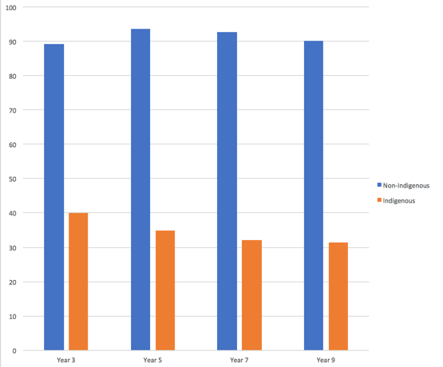

The 2 graphs below is the comparision of the Northern Territory Naplan Reading result in 2011 vs 2017. Click each button to reveal the graph.
Figure 1: NAPLAN Test result in 2011. Percentage of student above national minimum standard in reading for year 3, 5, 7 and 9 between Indigenous and Non-Indiginous in Northen Territory. Data source: NAPLAN results 2011

Figure 2: NAPLAN Test result in 2017. Percentage of student above national minimum standard in reading for year 3, 5, 7 and 9 between Indigenous and Non-Indiginous in Northen Territory. Data source: NAPLAN results 2017